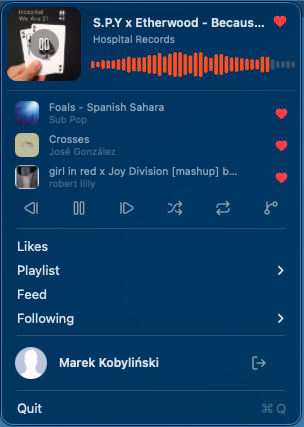

macOS menu-bar player
Reed
SoundCloud, reduced to a personal music launcher that lives in your menu bar.
Your likes, playlists, feed, and the artists you follow — one click away, playing instantly. No browser tab, no dock icon.
Install with Homebrew
$brew install --cask kobylinski/tap/reed

Playback
- Mini-player with a seekable waveform — click to scrub
- Prev · play · next, plus shuffle & repeat
- Recently played — jump back a track or three
- DJ mode — equal-power crossfade between songs
- Radio — an endless station from any track
- Like or unlike anything inline
Sources
- Likes — your whole library, hundreds deep
- Playlists — type to search, scroll to pick
- Feed — your stream of new posts
- Following — play any artist you follow
Native
- Now Playing + hardware media keys
- Streams SoundCloud HLS AAC via AVPlayer
- Reopens right where you left off
- Lucide icons that adapt to light & dark
- Sign in with OAuth 2.1 + PKCE
One thing
to know
to know
You'll need SoundCloud Artist Pro
SoundCloud reopened API access in June 2026, but getting your own credentials needs a paid Artist Pro plan — a free profile can't register an app, so Pro is what lets Reed connect to your account. Check or activate it at soundcloud.com/pro.
Press the icon. Music starts.
Built for people who already know what they want to hear — and want it in the background.